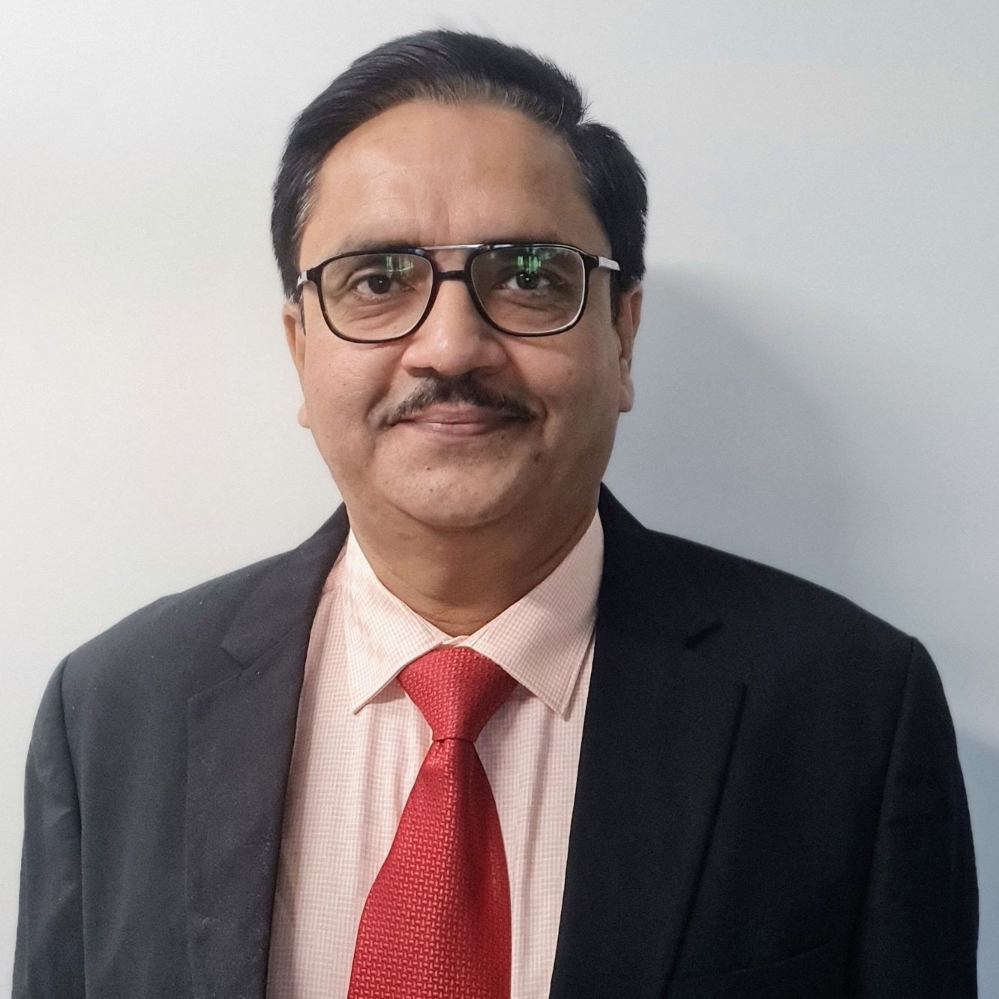

Annual savings enabled through a multi-partner managed-services transition.
HATHWAY DIGITALCIO · IT TRANSFORMATION · ANALYTICS MUMBAI / INDIA

Technology that
makes business move.
Aditya Ghosh is an IT transformation architect with 30+ years of experience leading enterprise technology, data and digital change.
↓01 — EXECUTIVE PROFILE
Strategy with
operational depth.
Aditya works with leadership teams to turn technology investment into business value — from boardroom strategy to the resilience, governance and delivery discipline required to execute it.
His work spans data and AI initiatives, IT managed services, enterprise applications, digital platforms, cloud, information security and complex partner ecosystems.
View LinkedIn profile ↗02 — SELECTED IMPACT
Scale, simplified.
Outcomes, delivered.
Enterprise data lake scale, processing 15 billion records daily for 200+ business KPIs.
VODAFONE IDEAAnnual revenue uplift from advanced campaign management and micro-segmentation.
IDEA CELLULARCost reduction alongside a 60% reduction in operational complexity.
VODAFONE IDEA03 — LEADERSHIP PHILOSOPHY
“The test of technology is not novelty. It is the business change it makes possible.”
04 — CAREER JOURNEY
From industrial automation and global IT services to leadership roles inside India’s largest telecom and digital businesses.
Independent IT Consultant
Strategy, products and AI initiatives.
Deputy CEO · Bigshare Services
Transformation and AI initiatives.
Business Unit Head · Jhaishna Technologies
New product development and marketing.
Senior VP & CIO / Head IT · Hathway
Technology strategy, transformation, operations, security and governance.
VP & Head IT Analytics · Vodafone Idea
Analytics platform consolidation and enterprise data transformation.
AVP & Portfolio Head IT · Idea Cellular
Analytics, digital transformation and customer platforms.
Earlier roles include Tata Teleservices, Tech Mahindra, Infosys, Mahindra British Telecom, ABB, NELCO and Uptron.
05 — FOUNDATIONS
IIT Roorkee
B.E., Electronics & Communication Engineering
AIMA
Advanced Diploma in Management
IIM Calcutta
Management and leadership programme
ITIL
Training and certification
06 — START A CONVERSATION